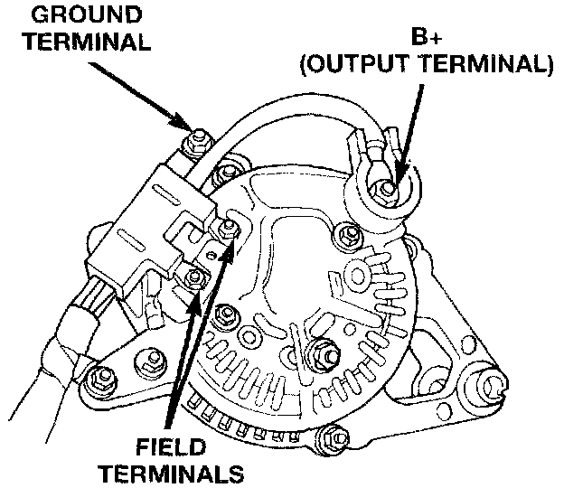

Charging System Resistance Tests
Generator Terminals (Typical Wiring Harness Shown):

These tests will show the amount of voltage drop across the generator output wire, from the generator output (B+) terminal to the battery positive post. They will also show the amount of voltage drop from the ground (-) terminal on the generator to the battery negative post. A typical generator wiring harness is as shown. Wiring harness routing as shown, in may be slightly different depending on vehicle model and/or engine.
A voltmeter with a 0-18 volt DC scale should be used for these tests. By repositioning the voltmeter test leads, the point of high resistance (voltage drop) can easily be found.
PREPARATION
1. Before starting test, make sure battery is in good condition and is fully-charged. See Battery for more information.
2. Check condition of battery cables at battery. Clean if necessary
3. Start the engine and allow it to reach normal operating temperature.
4. Shut engine off.
5. Connect an engine tachometer.
6. Fully engage the parking brake.
TEST
1. Start engine.
2. Place heater blower in high position.
3. Turn on headlamps and place in high-beam position.
4. Turn vehicle interior lamps on.
5. Bring engine speed up to 2400 rpm and hold.
6. Testing (+) circuitry:
a. Touch the negative lead of voltmeter directly to battery positive post.
b. Touch the positive lead of voltmeter to the B+ output terminal stud on the generator (not the terminal mounting nut). Voltage should be no higher than 0.6 Volts. If voltage is higher than 0.6 Volts, touch test lead to terminal mounting stud nut and then to the wiring connector. If voltage is now below 0.6 Volts, look for dirty, loose or poor connection at this point. Also check condition of the generator output wire-to-battery bullet connector (if equipped). Refer to connector location. A voltage drop test may be performed at each (+) connection in this circuit to locate the excessive resistance.
7. Testing (-) circuitry:
a. Touch the negative lead of voltmeter directly to battery negative post.
b. Touch the positive lead of voltmeter to the ground terminal stud on the generator case (not the terminal mounting nut). Voltage should be no higher than 0.3 Volts. If voltage is higher than 0.3 Volts, touch test lead to terminal mounting stud nut and then to the wiring connector. If voltage is now below 0.3 Volts, look for dirty, loose or poor connection at this point. A voltage drop test may be performed at each (-) connection in this circuit to locate the excessive resistance. This test can also be performed between the generator case and the engine. If test voltage is higher than 0.3 Volts, check for corrosion at generator mounting points or loose generator mounting.